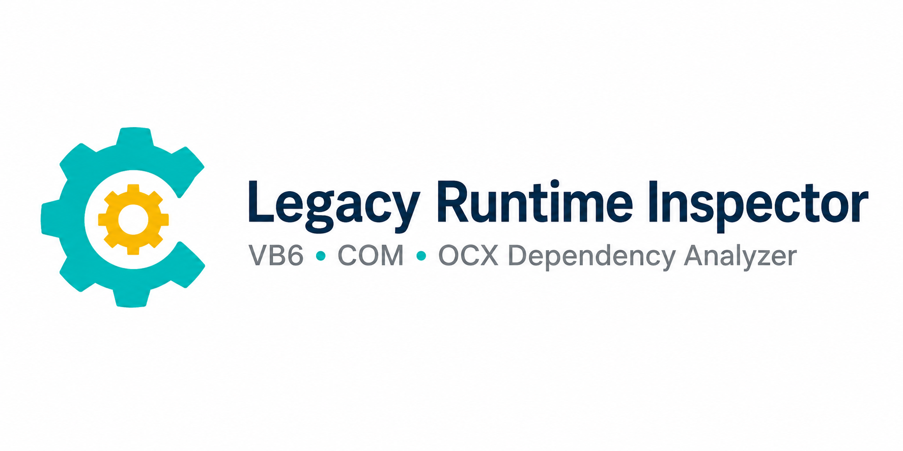
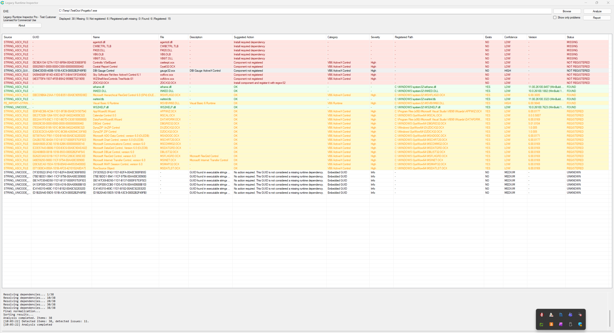
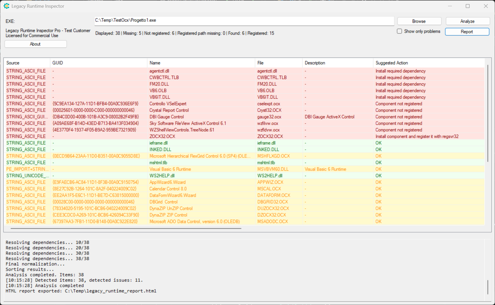
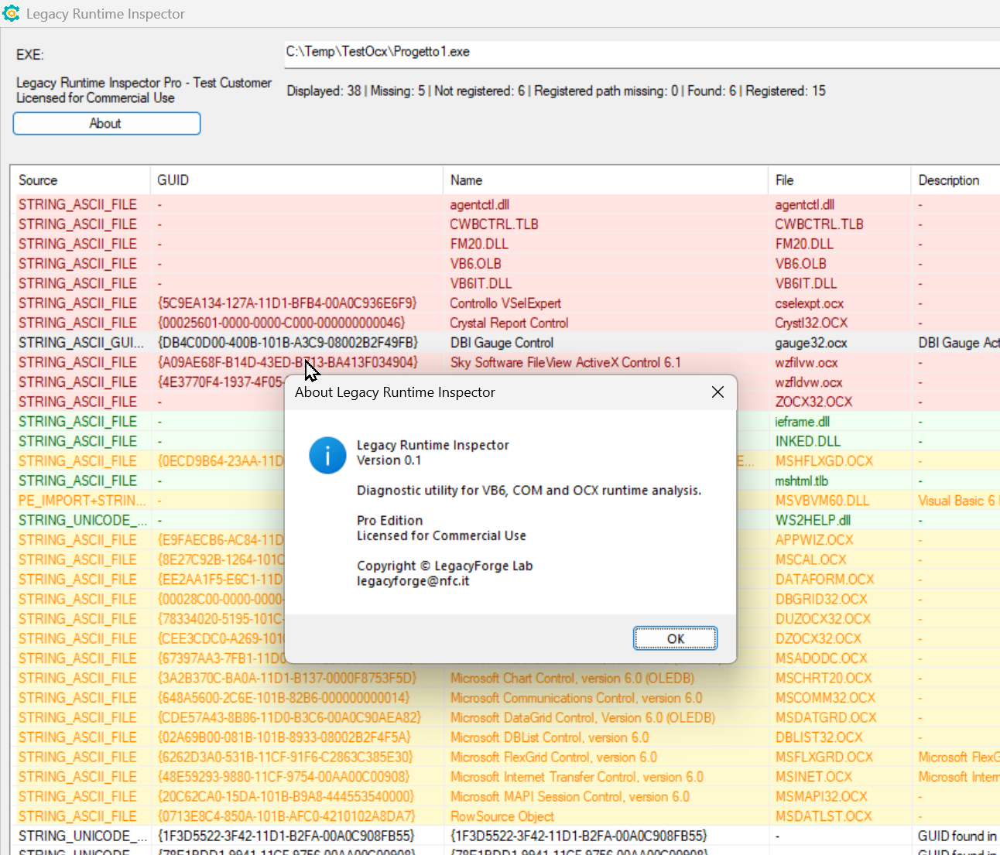
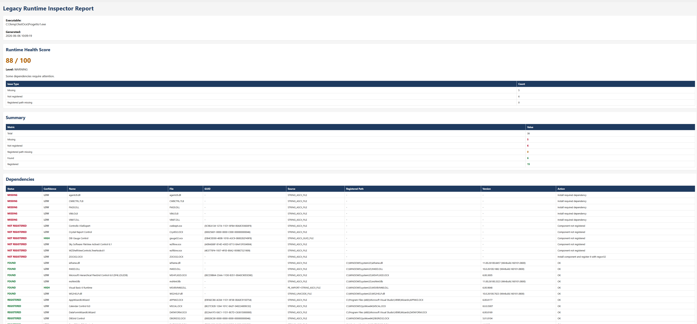

Diagnostic utility for VB6, COM and ActiveX runtime analysis.
Why
Legacy Runtime Inspector was designed to help maintainers of legacy Windows applications quickly identify missing runtime dependencies, COM registration issues and ActiveX components.
It is particularly useful for:
- VB6 applications
- COM-based applications
- Industrial software
- Legacy business applications
Features
- Missing DLL detection
- Missing OCX detection
- COM registration verification
- Embedded COM GUID analysis
- ActiveX dependency detection
- Runtime Knowledge Base integration
- Portable deployment
Knowledge Base
Technical articles covering VB6 deployment, COM registration, ActiveX controls, runtime troubleshooting and legacy Windows applications.
Download
Current version: 0.1
Portable application. No installation required.
Download the latest ZIP package from GitHub Releases.
Main Analysis Window

Missing Components Detection

HTML Report

About

Editions
Free Edition
- Full analysis
- Personal use
- Evaluation use
- No report export
Pro Edition
Paid commercial license.
- Commercial use
- HTML/TXT export
- Priority support
- Knowledge Base updates
For Pro licensing and pricing information, contact:
legacyforge@nfc.it
Pro Edition
Legacy Runtime Inspector Pro is intended for commercial and professional use.
Benefits include:
- Commercial license
- HTML/TXT report export
- Priority support
- Future Knowledge Base updates
Interested in a Pro license? Contact legacyforge@nfc.it.
Please include:
- Your name
- Company name, if applicable
- Intended use
Pricing and licensing information will be provided on request.
Feedback
Found a bug or have a feature request?
Contact
For licensing information, support and commercial use: legacyforge@nfc.it